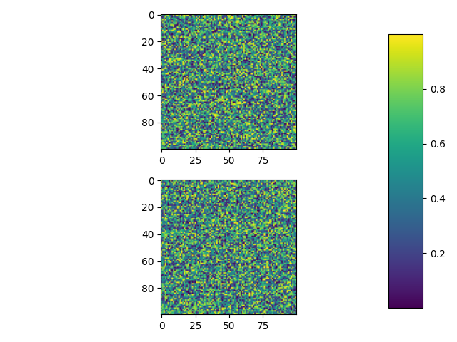

Note
Click here to download the full example code
01. mpl.imshow
Display data as an image, i.e., on a 2D regular raster.
Out:
C:\Users\kelda\Desktop\repositories\github\python-spare-code\main\examples\matplotlib\plot_main01_imshow.py:24: UserWarning:
This figure includes Axes that are not compatible with tight_layout, so results might be incorrect.
8 import matplotlib.pyplot as plt
9 import numpy as np
10
11 # Fixing random state for reproducibility
12 np.random.seed(19680801)
13
14 # Display
15 plt.subplot(211)
16 plt.imshow(np.random.random((100, 100)))
17 plt.subplot(212)
18 plt.imshow(np.random.random((100, 100)))
19
20 # Adjust
21 plt.subplots_adjust(bottom=0.1, right=0.8, top=0.9)
22 cax = plt.axes([0.85, 0.1, 0.075, 0.8])
23 plt.colorbar(cax=cax)
24 plt.tight_layout()
25
26 # Show
27 plt.show()
Total running time of the script: ( 0 minutes 0.137 seconds)